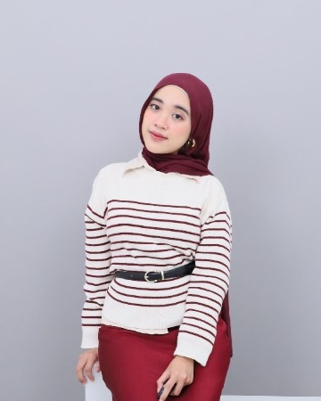

Halo, perkenalkan saya
Editor
Editor naskah buku dengan keahlian penerbitan menyeluruh (*end-to-end book publishing*). Berlatar belakang akademis Pendidikan Bahasa dan Sastra Indonesia dari Universitas Negeri Malang (IPK 3.81, lulus 7 semester).
Berpengalaman mengelola naskah dari tahap *pitching* penulis, penyuntingan substantif, *visual direction* untuk ilustrasi sampul & karakter, hingga sukses membidani buku-buku komersial berprestasi dengan capaian sekitar 2.000 pre-orders serta rangkaian promosi di 4 kota.
~2.000
Pre-Orders Buku Komersial
20–24
Buku / Tahun (1–2 per bulan)
3.81/4.00
IPK Sastra Indonesia UM
7 Sem.
Kelulusan Sarjana Tercepat

Depok, Jawa Barat, Indonesia
“Menjembatani gagasan otentik penulis dengan standar penerbitan yang memikat ribuan pembaca.”
Kombinasi keahlian tata bahasa presisi, manajemen proses produksi penerbitan, serta koordinasi tim kreatif lintas fungsi.
Penyuntingan naskah secara komprehensif mulai dari struktur cerita hingga tanda baca terkecil.
Pengembangan produk buku dari tahap negosiasi naskah hingga siap masuk mesin percetakan.
Manajemen alur kerja terstruktur untuk memastikan tenggat waktu dan kualitas buku tetap terjaga.
Penguasaan aplikasi industri untuk tata letak dokumen naskah, desain visual, dan kolaborasi kerja.
Dedikasi mendalam di industri penerbitan buku, jurnalisme kampus, serta bimbingan literasi akademik.
AKAD MEDIA CAKRAWALA — Depok, Jawa Barat
BUTTERFLIES BOOKS — Remote
LP2M UNIVERSITAS NEGERI MALANG × JAWA POS
FAKULTAS SASTRA, UNIVERSITAS NEGERI MALANG
PRIMAGAMA & INDEPENDENT TUTOR FREELANCE — Malang
Memberikan bimbingan akademis bagi siswa jenjang SD, SMP, hingga SMA. Menyesuaikan metode pengajaran dan materi pembelajaran bahasa/literasi sesuai kebutuhan belajar individual setiap peserta didik.
Klik pada sampul buku untuk melihat rincian peran editorial, sinopsis, dan kontribusi El Syifa pada naskah tersebut.
Contoh interaktif bagaimana kepekaan bahasa dan analisis ritme mengubah draf mentah menjadi naskah yang matang, berdaya pikat emosional, dan patuh standar kebahasaan.
Hujan turun sangat deras sekali membasahi kaca jendela kamarnya. Dia merasa sangat sedih dan bingung kenapa laki-laki itu meninggalkannya begitu saja kemarin sore tanpa ada ucapan sepatah katapun yang terucap dari mulutnya.
Kala itu dia memegang cangkir kopi yang sudah dingin dengan tangannya yang bergetar hebat. Di dalam hatinya dia bertanya-tanya, apakah cinta yang selama ini mereka bina berdua hanyalah sebuah kebohongan belaka?
Catatan Evaluasi Editor:
• Pleonasme & redundansi: *"sangat deras sekali"*, *"sepatah katapun yang terucap dari mulutnya"*, *"kebohongan belaka"*.
• *Telling* berlebihan tanpa membangkitkan suasana indrawi pembaca.
• Ketidakteraturan ejaan PUEBI: *"katapun"* (seharusnya terpisah: *"kata pun"*).
Hujan menghantam kaca jendela tanpa jeda. Di sudut kamar yang sunyi, ia membiarkan dingin cangkir kopi merambat ke jemarinya yang masih gemetar. Kepergian lelaki itu kemarin sore tak menyisakan apa pun selain sunyi yang menusuk—bahkan tak ada satu patah kata pun yang sempat dilepaskan ke udara.
Di hadapan sisa pekat kopi yang mengendap, sebuah tanya terus mengoyak dadanya: adakah masa lalu yang mereka bangun bersama sungguh-sungguh bernyawa, ataukah sekadar ilusi yang rapuh?
Penyempurnaan yang Dihasilkan:
• Pendekatan *Show, Don't Tell*: Dingin cangkir dan sunyi kamar memperkuat emosi tokoh tanpa perlu digurui.
• Ritme kalimat lebih anggun dan kadensial sehingga tidak monoton saat dibaca bersuara.
• Akurasi tanda baca dan ejaan bahasa Indonesia yang baku namun luwes.
Universitas Negeri Malang (UM) — Malang, Jawa Timur
Agustus 2021 – Januari 2025
Menyelesaikan seluruh kurikulum pendidikan sarjana dalam kurun waktu 7 semester dengan prestasi memuaskan. Fokus studi meliputi:
Pendalaman kaidah morfologi, struktur kalimat majemuk, semantik bahasa Indonesia, dan PUEBI/EYD mutakhir.
Kritik sastra, analisis struktural naskah fiksi, pembentukan karakter, dan perkembangan sastra kontemporer Indonesia.
Terbuka untuk diskusi mengenai dunia perbukuan, pertukaran wawasan editorial naskah fiksi, kerja sama penerbitan, maupun jejaring profesional literasi.
WhatsApp / Telepon
0812-1668-1744
Kirim Pesan →Email Langsung
elsyifatheas@gmail.com
Tulis Email →LinkedIn Resmi
in/el-syifa
Buka Profil →Lokasi / Domisili
Depok, Jawa Barat
Indonesia